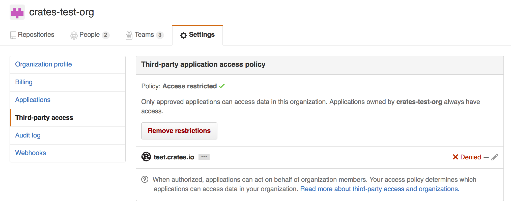
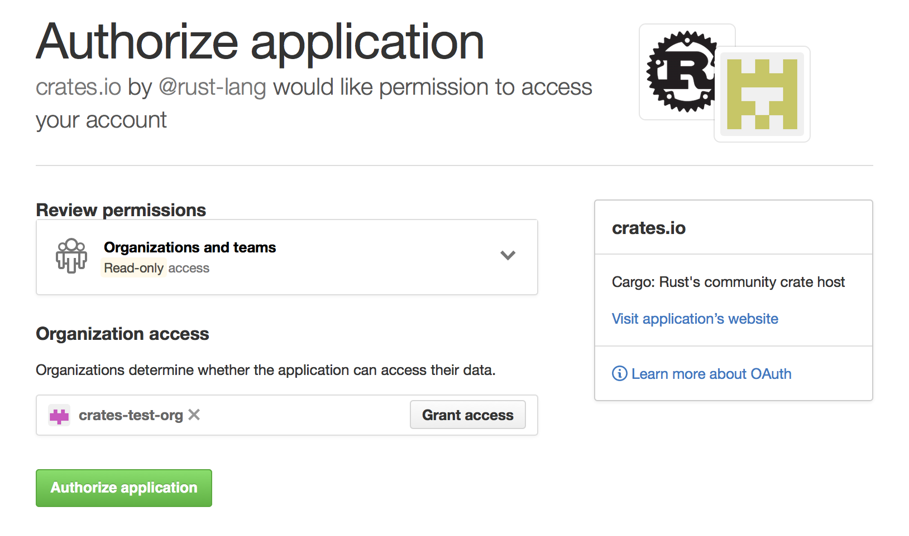

انتشار در crates.io
وقتی کتابخانهای دارید که میخواهید با دنیا به اشتراک بگذارید، وقت آن است که آن را در crates.io منتشر کنید! انتشار یک crate یعنی آپلود یک نسخهٔ مشخص تا در crates.io میزبانی شود.
هنگام انتشار یک crate مراقب باشید، زیرا انتشار عموماً دائمی است. یک نسخه هرگز نمیتواند بازنویسی شود و کد نمیتواند حذف شود. با این حال، محدودیتی برای تعداد نسخههایی که میتوان منتشر کرد وجود ندارد.
پیش از اولین انتشار
اول از همه، برای گرفتن یک توکن API به یک حساب کاربری در crates.io نیاز دارید. برای این کار، به صفحهٔ اصلی بروید و از طریق یک حساب GitHub وارد شوید (فعلاً الزامی است). همچنین باید نشانی ایمیل خود را در صفحهٔ تنظیمات حساب وارد و تأیید کنید. پس از آن، یک توکن API بسازید و حتماً آن را کپی کنید. وقتی از صفحه خارج شوید دیگر نمیتوانید آن را ببینید.
سپس دستور cargo login را اجرا کنید.
$ cargo login
سپس در پرامپت، توکن مشخصشده را وارد کنید.
please paste the API Token found on https://crates.io/me below
abcdefghijklmnopqrstuvwxyz012345
این دستور توکن API شما را به Cargo اعلام میکند و آن را بهصورت محلی در ~/.cargo/credentials.toml ذخیره میکند. توجه داشته باشید که این توکن یک راز است و نباید با هیچ کس دیگری به اشتراک گذاشته شود. اگر به هر دلیلی فاش شد، باید فوراً آن را باطل (revoke) کنید.
Note
دستور
cargo logoutرا میتوان برای حذف توکن ازcredentials.tomlبه کار برد. اگر دیگر نیازی به ذخیره بودن آن روی دستگاه محلی ندارید، این میتواند مفید باشد.
پیش از انتشار یک crate جدید
به خاطر داشته باشید که نام crateها در crates.io بر اساس «هر که زودتر بیاید، زودتر سرویس میگیرد» تخصیص داده میشود. وقتی نام یک crate گرفته شد، نمیتوان از آن برای crate دیگری استفاده کرد.
فرادادهای را که میتوانید مشخص کنید در Cargo.toml بررسی کنید تا مطمئن شوید crate شما راحتتر کشف میشود! پیش از انتشار، مطمئن شوید فیلدهای زیر را پر کردهاید:
- [
licenseیاlicense-file] descriptionhomepagerepositoryreadme
همچنین خوب است چند keywords و categories نیز بگنجانید، هرچند الزامی نیستند.
اگر در حال انتشار یک کتابخانه هستید، ممکن است بخواهید به رهنمودهای API در Rust نیز مراجعه کنید.
بستهبندی یک crate
گام بعدی بستهبندی crate و آپلود آن در crates.io است. برای این کار از زیردستور cargo publish استفاده میکنیم. این دستور گامهای زیر را انجام میدهد:
- چند بررسی اعتبارسنجی روی بستهٔ شما انجام میدهد.
- کد منبع شما را در یک فایل
.crateفشرده میکند. - فایل
.crateرا در یک پوشهٔ موقت استخراج میکند و بررسی میکند که کامپایل میشود. - فایل
.crateرا در crates.io آپلود میکند. - رجیستری پیش از افزودن بسته، چند بررسی اضافی روی بستهٔ آپلودشده انجام میدهد.
توصیه میشود پیش از انتشار، ابتدا cargo publish --dry-run (یا cargo package که معادل آن است) را اجرا کنید تا مطمئن شوید هیچ هشدار یا خطایی وجود ندارد. این کار سه گام اول فهرست بالا را انجام میدهد.
$ cargo publish --dry-run
میتوانید فایل .crate تولیدشده را در پوشهٔ target/package بررسی کنید. crates.io در حال حاضر یک محدودیت اندازهٔ 10MB برای فایل .crate دارد. ممکن است بخواهید اندازهٔ فایل .crate را بررسی کنید تا مطمئن شوید بهطور اتفاقی داراییهای بزرگی را که برای ساخت بستهتان لازم نیستند، مانند دادههای آزمون، مستندات وبسایت یا کد تولیدشده، بستهبندی نکردهاید. میتوانید با دستور زیر بررسی کنید چه فایلهایی گنجانده شدهاند:
$ cargo package --list
Cargo هنگام بستهبندی بهطور خودکار فایلهایی را که سیستم کنترل نسخهٔ شما نادیده میگیرد نادیده میگیرد، اما اگر بخواهید مجموعهٔ اضافی از فایلها را برای نادیده گرفتن مشخص کنید، میتوانید از کلید exclude در manifest استفاده کنید:
[package]
# ...
exclude = [
"public/assets/*",
"videos/*",
]
اگر ترجیح میدهید فایلهایی را که باید گنجانده شوند صریحاً فهرست کنید، Cargo از یک کلید include نیز پشتیبانی میکند که در صورت تنظیم، کلید exclude را بازنویسی میکند:
[package]
# ...
include = [
"**/*.rs",
]
آپلود crate
وقتی آمادهٔ انتشار شدید، از دستور cargo publish برای آپلود در crates.io استفاده کنید:
$ cargo publish
و تمام، شما اکنون اولین crate خود را منتشر کردهاید!
انتشار نسخهٔ جدید از یک crate موجود
برای انتشار نسخهٔ جدید، مقدار version مشخصشده در manifest فایل Cargo.toml خود را تغییر دهید. قواعد SemVer را به خاطر داشته باشید که رهنمودهایی دربارهٔ اینکه چه چیزی تغییر سازگار است ارائه میدهند. سپس cargo publish را همانطور که در بالا شرح داده شد اجرا کنید تا نسخهٔ جدید آپلود شود.
Tip
فرایند کامل انتشار را در نظر بگیرید و هر چه را که میتوانید خودکار کنید.
هر نسخه باید شامل این موارد باشد:
- یک مدخل changelog که ترجیحاً بهصورت دستی تنظیمشده باشد، هرچند نسخهٔ تولیدشده بهتر از هیچ است
- یک تگ git که به کامیت منتشرشده اشاره میکند
نمونههایی از ابزارهای شخص ثالث که نماینده گردشکارهای مختلف هستند عبارتاند از (به ترتیب حروف الفبا):
برای موارد بیشتر، crates.io را ببینید.
مدیریت یک crate مبتنی بر crates.io
مدیریت crateها عمدتاً از طریق ابزار خط فرمان cargo انجام میشود، نه رابط وب crates.io. برای این منظور، چند زیردستور برای مدیریت یک crate وجود دارد.
cargo yank
ممکن است مواقعی پیش بیاید که نسخهای از یک crate را منتشر کنید که در واقع به دلیلی (خطای نحوی، فراموش کردن گنجاندن یک فایل و غیره) خراب از آب درمیآید. برای چنین موقعیتهایی، Cargo از «yank» کردن یک نسخه از یک crate پشتیبانی میکند.
$ cargo yank --version 1.0.1
$ cargo yank --version 1.0.1 --undo
yank هیچ کدی را حذف نمیکند. برای مثال، این قابلیت برای حذف رازهایی که بهطور اتفاقی آپلود شدهاند در نظر گرفته نشده است. اگر چنین اتفاقی بیفتد، باید فوراً آن رازها را بازنشانی (reset) کنید.
معنای نسخهٔ yankشده این است که هیچ وابستگی جدیدی نمیتواند به آن نسخه ساخته شود، اما همهٔ وابستگیهای موجود به کار خود ادامه میدهند. یکی از هدفهای اصلی crates.io این است که بهعنوان یک آرشیو دائمیِ crateها عمل کند که در طول زمان تغییر نمیکند، و اجازهٔ حذف یک نسخه با این هدف مغایرت دارد. در اصل، yank یعنی همهٔ بستههایی که Cargo.lock دارند خراب نمیشوند، در حالی که هیچ فایل Cargo.lock تولیدشده در آینده نسخهٔ yankشده را فهرست نمیکند.
cargo owner
یک crate اغلب توسط بیش از یک نفر توسعه داده میشود، یا ممکن است نگهدارندهٔ اصلی با گذشت زمان عوض شود! مالک یک crate تنها کسی است که اجازه دارد نسخههای جدید crate را منتشر کند، اما یک مالک میتواند مالکان دیگری را تعیین کند.
$ cargo owner --add github-handle
$ cargo owner --remove github-handle
$ cargo owner --add github:rust-lang:owners
$ cargo owner --remove github:rust-lang:owners
شناسههای مالک که به این دستورها داده میشوند باید نامهای کاربری GitHub یا تیمهای GitHub باشند.
اگر یک نام کاربری به --add داده شود، آن کاربر بهعنوان مالک «نامدار» (named) دعوت میشود و حقوق کامل روی crate دارد. علاوه بر اینکه میتواند نسخههای crate را منتشر یا yank کند، توانایی افزودن یا حذف مالکان را نیز دارد، از جمله مالکی که او را مالک کرده است. گفتنی نیست که نباید افرادی را که کاملاً به آنها اعتماد ندارید به مالک نامدار تبدیل کنید. برای اینکه کاربری مالک نامدار شود، باید پیش از آن وارد crates.io شده باشد.
اگر یک نام تیم به --add داده شود، آن تیم بهعنوان مالک «تیمی» (team) دعوت میشود و حقوق محدودی روی crate دارد. در حالی که اجازهٔ انتشار یا yank کردن نسخههای crate را دارند، توانایی افزودن یا حذف مالکان را ندارند. علاوه بر اینکه برای مدیریت گروههای مالکان راحتتر است، تیمها در برابر بدخواه شدن مالکان کمی امنتر هم هستند.
نحو تیمها در حال حاضر github:org:team است (مثالهای بالا را ببینید). برای دعوت یک تیم بهعنوان مالک، باید عضو آن تیم باشید. چنین محدودیتی برای حذف یک تیم از مالکیت اعمال نمیشود.
مجوزهای GitHub
عضویت در تیم چیزی نیست که GitHub دسترسی عمومی سادهای به آن بدهد و احتمال دارد هنگام کار با آنها به پیام زیر برخورد کنید:
به نظر میرسد شما مجوز پرسوجوی یک ویژگی ضروری را از GitHub برای تکمیل این درخواست ندارید. ممکن است لازم باشد در crates.io دوباره احراز هویت کنید تا مجوز خواندن عضویتهای سازمان GitHub داده شود.
این اساساً پیامی فراگیر است برای «شما سعی کردید یک تیم را پرسوجو کنید و یکی از پنج سطح کنترل دسترسی عضویت این کار را رد کرد». این اغراق نیست. پشتیبانی GitHub از کنترل دسترسی تیمها در سطح Enterprise است.
محتملترین علت این است که آخرین بار پیش از افزوده شدن این قابلیت وارد شدهاید. ما در ابتدا هنگام احراز هویت کاربران هیچ مجوزی از GitHub درخواست نمیکردیم، چون در واقع هرگز از توکن کاربر برای چیزی جز وارد کردن او استفاده نمیکردیم. با این حال، برای پرسوجوی عضویت تیم از جانب شما، اکنون به دامنهٔ read:org نیاز داریم.
آزادید این دامنه را به ما ندهید و هر چیزی که پیش از معرفی تیمها کار میکرد به کار خود ادامه خواهد داد. اما هرگز نخواهید توانست یک تیم را بهعنوان مالک اضافه کنید یا یک crate را بهعنوان مالک تیمی منتشر کنید. اگر هر وقت چنین کاری را امتحان کنید، خطای بالا را دریافت خواهید کرد. همچنین ممکن است اگر بخواهید crateای را منتشر کنید که اصلاً مال شما نیست اما اتفاقاً یک تیم دارد، این خطا را ببینید.
اگر هر وقت نظرتان عوض شد، یا فقط مطمئن نیستید که crates.io مجوز کافی دارد، همیشه میتوانید به https://crates.io/ بروید و دوباره احراز هویت کنید؛ اگر crates.io همهٔ دامنههای موردنظر خود را نداشته باشد، از شما مجوز خواهد خواست.
مانع دیگر برای پرسوجوی GitHub این است که ممکن است سازمان فعالانه دسترسی اشخاص ثالث را رد کند. برای بررسی این موضوع، میتوانید به این نشانی بروید:
https://github.com/organizations/:org/settings/oauth_application_policy
که در آن :org نام سازمان است (مثلاً rust-lang). ممکن است چیزی شبیه این ببینید:

در آنجا میتوانید صریحاً crates.io را از فهرست سیاه سازمان خود حذف کنید، یا فقط دکمهٔ «Remove Restrictions» را فشار دهید تا به همهٔ برنامههای شخص ثالث اجازهٔ دسترسی به این دادهها داده شود.
یا بهطور جایگزین، وقتی crates.io دامنهٔ read:org را درخواست کرد، میتوانستید با فشردن دکمهٔ «Grant Access» کنار نام آن، صریحاً crates.io را برای پرسوجو از سازمان موردنظر در فهرست سفید قرار دهید:

عیبیابی خطاهای دسترسی به تیم GitHub
هنگام تلاش برای افزودن یک تیم GitHub بهعنوان مالک crate، ممکن است خطایی مانند زیر ببینید:
error: failed to invite owners to crate <crate_name>: api errors (status 200 OK): could not find the github team org/repo
در آن صورت، باید به صفحهٔ تنظیمات برنامهٔ GitHub بروید و بررسی کنید که crates.io در زبانهٔ Authorized OAuth Apps فهرست شده باشد. اگر نیست، باید به https://crates.io/ بروید و آن را مجاز کنید. سپس به صفحهٔ Application Settings در GitHub برگردید، روی برنامهٔ crates.io در فهرست کلیک کنید و مطمئن شوید شما یا سازمانتان در فهرست “Organization access” با یک علامت تیک سبز فهرست شدهاید. اگر دکمهای با برچسب Grant یا Request وجود دارد، باید دسترسی را بدهید یا از مالک سازمان بخواهید این کار را بکند.